ВПР (VLOOKUP) в Excel: синтаксис, примеры и частые ошибки
Как работает ВПР, пример с заказами и пользователями, почему функция возвращает #N/A и чем её можно заменить.
Типичная ситуация: на одном листе заказы с идентификатором пользователя, на другом список пользователей, и нужно подставить имя рядом с каждым заказом. Копировать вручную долго и ненадёжно. Это делает ВПР (в английской версии VLOOKUP): берёт ключ, ищет его в первом столбце таблицы и возвращает значение из той же строки.
Синтаксис
=ВПР(искомое_значение; таблица; номер_столбца; [интервальный_просмотр])
искомое_значение– что искать, например идентификатор пользователя в текущей строке.таблица– где искать. Ключ должен быть в первом столбце этого диапазона.номер_столбца– какой столбец диапазона вернуть, считая с 1.интервальный_просмотр–ЛОЖЬ(или0) для точного совпадения,ИСТИНАдля приблизительного. Если аргумент опущен, Excel используетИСТИНА, а для идентификаторов и имён это почти всегда не то, что нужно.
Пример
На листе Orders находятся номер заказа, дата, сумма и идентификатор пользователя:
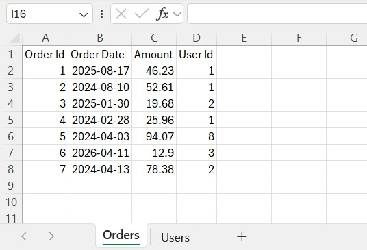
На листе Users справочник:
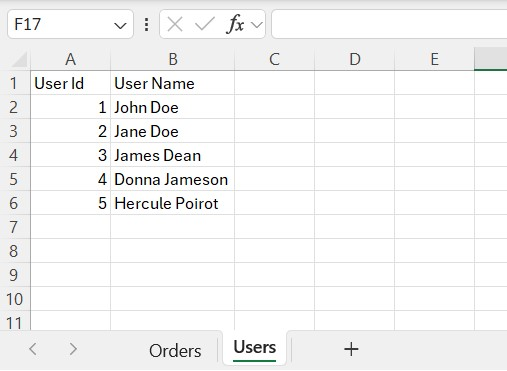
В ячейке E2 листа Orders начните формулу. Введя первый аргумент, перейдите на лист Users и выделите столбцы A:B, Excel подставит второй аргумент:
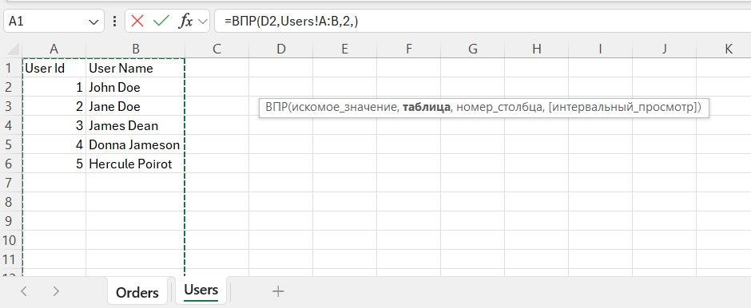
=ВПР(D2; Users!A:B; 2; ЛОЖЬ)
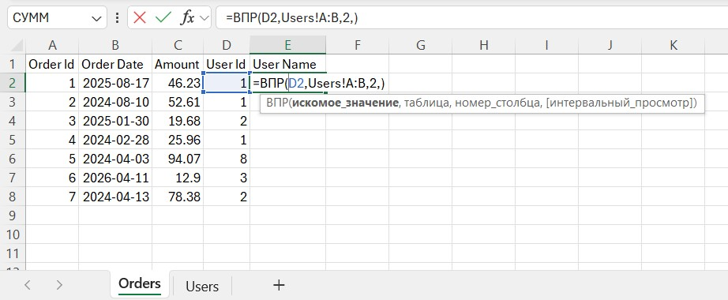
Ключ находится в D2, таблица – Users!A:B, возвращаем второй столбец (имя). Протяните формулу вниз:
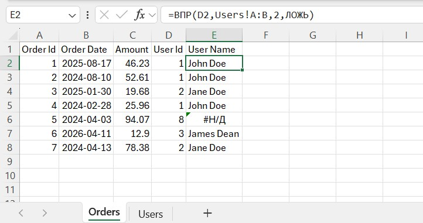
В заказе с идентификатором 8 появился #Н/Д: такого идентификатора нет на листе Users. Это правильное поведение: оно сообщает, что данные не сходятся, а это часто как раз то, что нужно найти.
Почему появляется #Н/Д (или неверное значение)
- Ключа действительно нет. Проверьте справочник.
- Текст и число. Число
1не совпадает с текстом"1". См. преобразование чисел-как-текст. - Лишние пробелы.
"Иван "не равно"Иван". См. удаление лишних пробелов. - Столбец с ключом не первый. ВПР ищет только справа от первого столбца диапазона.
- Приблизительное совпадение. Без
ЛОЖЬExcel считает, что первый столбец отсортирован, и может молча вернуть не ту строку. Всегда указывайте последний аргумент. - Номер столбца задан числом. Если в справочник вставили столбец,
2теперь указывает не туда. После изменения структуры таблицы проверяйте формулы. - Диапазон «уезжает». При копировании формулы
A2:B6тоже смещается. Используйте столбцы целиком (A:B) или закрепите диапазон ($A$2:$B$6).
ПРОСМОТРX (XLOOKUP): современная замена ВПР
ПРОСМОТРX доступна в Excel 2021 и Microsoft 365 и устраняет несколько ограничений ВПР. Искать можно в любом столбце, а возвращать значение – из столбца слева или справа. Не нужно считать номер столбца, точное совпадение используется по умолчанию, а отдельный аргумент позволяет указать, что вывести, если ключ не найден.
Синтаксис
=ПРОСМОТРX(искомое_значение; просматриваемый_массив; возвращаемый_массив; [если_ничего_не_найдено]; [режим_сопоставления]; [режим_поиска])
Первые три аргумента обязательны: что искать, где искать и из какого диапазона вернуть результат. Размеры просматриваемого и возвращаемого массивов должны совпадать. Остальные аргументы необязательны: задают сообщение для ненайденного ключа, правило совпадения и направление поиска.
Пример: название валюты по коду
На листе Orders в столбце F записан код валюты, а на листе Currencies коды находятся в столбце C, названия – в B. ВПР не подошла бы для такого расположения столбцов: искомый столбец стоит справа от возвращаемого. ПРОСМОТРX принимает эти диапазоны отдельно, поэтому может искать влево.
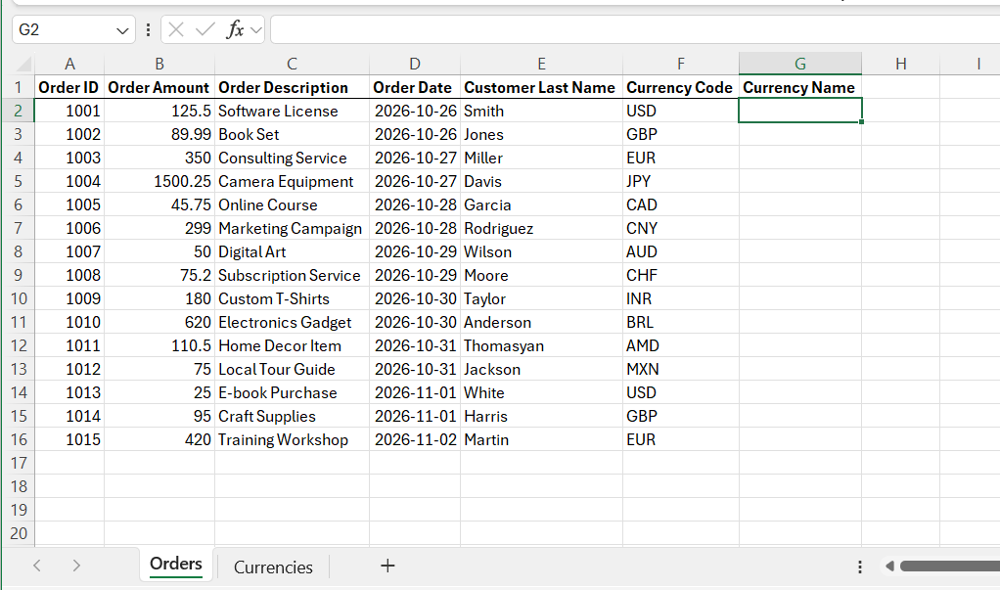
На листе Currencies столбец C содержит ключи, а столбец B – названия валют:
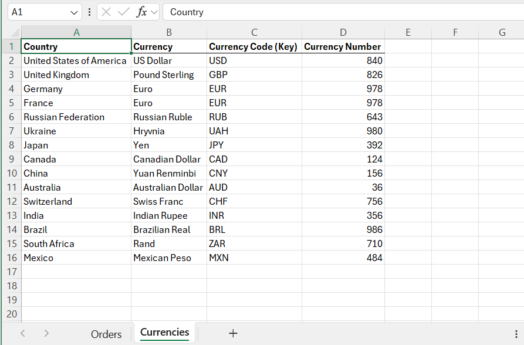
В ячейке G2 начните формулу и укажите значение для поиска – код из F2:
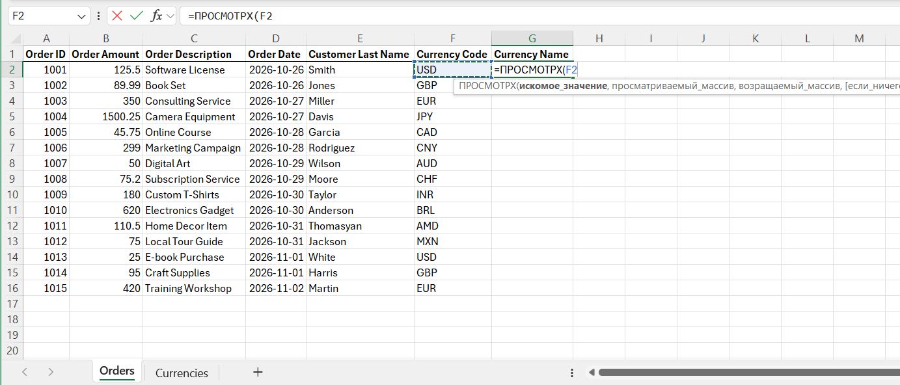
В качестве просматриваемого массива выберите столбец кодов Currencies!C:C:
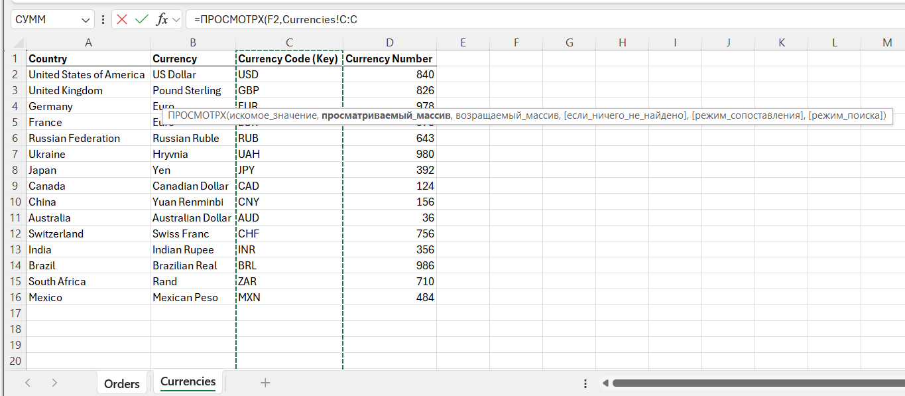
Возвращаемый массив – столбец названий Currencies!B:B. Он может находиться слева от массива поиска:
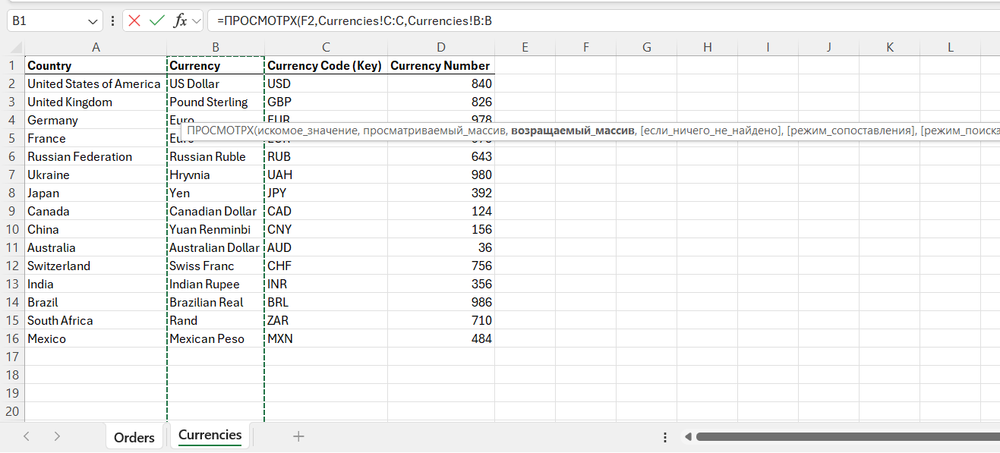
Четвёртый аргумент необязателен. Укажите в нём понятный текст, например "Валюта не найдена", чтобы вместо #Н/Д показать сообщение, если код отсутствует:
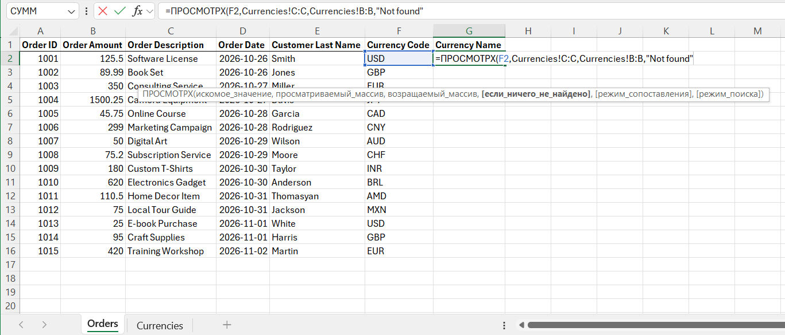
Полная формула для ячейки G2:
=ПРОСМОТРX(F2; Currencies!C:C; Currencies!B:B; "Валюта не найдена")
Нажмите Enter и скопируйте формулу вниз. Для кода AMD, которого нет в справочнике, появится заданное сообщение:
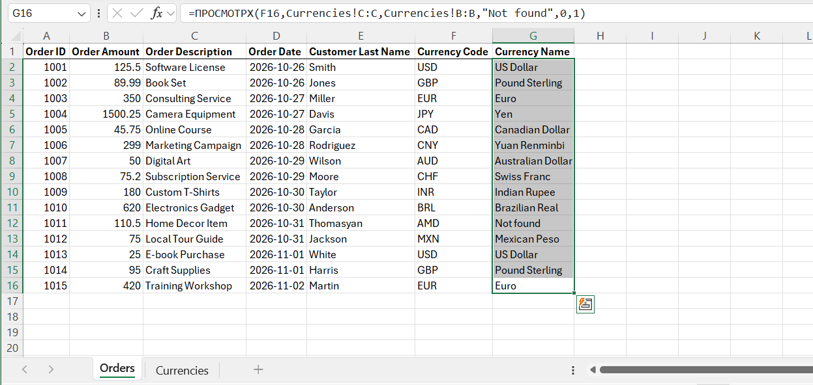
Дополнительные режимы
Если нужен не точный поиск, пятый аргумент режим_сопоставления меняет правило поиска. Обычно его можно не указывать: по умолчанию ПРОСМОТРX ищет точное совпадение. Значение 0 явно задаёт точный поиск; -1 ищет точное совпадение или ближайшее меньшее, 1 – точное или ближайшее большее, 2 включает подстановочные знаки. В поддерживаемых сборках Microsoft 365 значение 3 включает поиск по регулярному выражению.
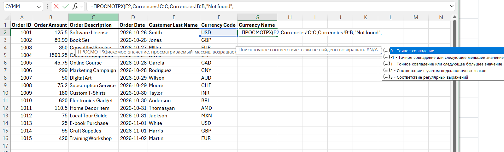
Шестой аргумент режим_поиска задаёт направление: 1 (по умолчанию) – от первого элемента к последнему, -1 – с конца к началу. Значения 2 и -2 включают двоичный поиск и требуют, чтобы данные были отсортированы по возрастанию или убыванию соответственно; для обычных справочников оставляйте значение по умолчанию.
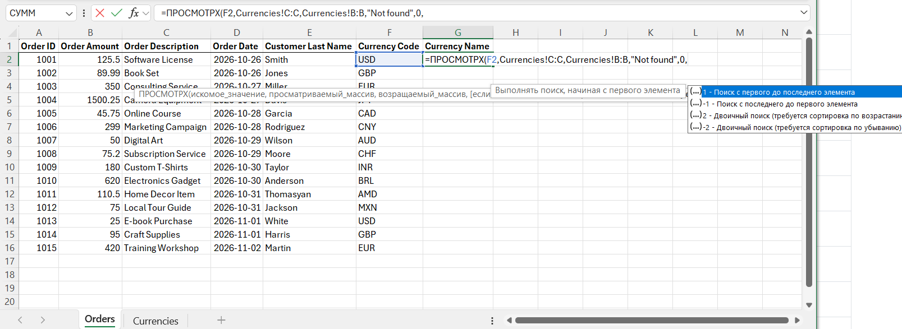
Например, в скриншоте с результатом точный режим и поиск сверху вниз указаны явно: =ПРОСМОТРX(F2; Currencies!C:C; Currencies!B:B; "Валюта не найдена"; 0; 1). Эти последние два аргумента можно опустить, если достаточно обычного точного поиска.
Альтернативы
ИНДЕКС и ПОИСКПОЗ работают во всех версиях и тоже ищут в любом направлении:
=ИНДЕКС(Users!B:B; ПОИСКПОЗ(D2; Users!A:A; 0))
Если справочник оформлен как таблица (см. очистку данных), на её столбцы можно ссылаться по имени, а диапазон растёт при добавлении строк.
Конструкция ЕСЛИОШИБКА(ВПР(...); "") скрывает ошибки, в том числе настоящие проблемы с данными. Применяйте её после того, как выяснили, почему значения не находятся.
О формулах в целом: Формулы Excel для начинающих.